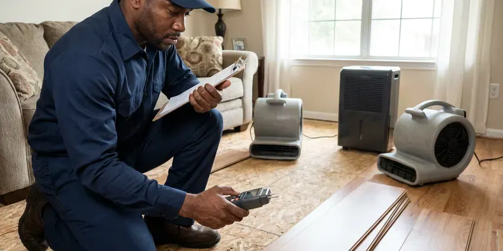

Tankless Water Heater Maintenance in La Crosse, WI
Keep peak performance for your tankless water heater in La Crosse, WI with professional maintenance from HKV Plumbing. We handle all makes and models.
- Fast, Dependable Service
- Warranty-Friendly Service Records
- Transparent Pricing
- Isolation Valve Installs
Get Expert Tankless Water Heater Maintenance in La Crosse, WI.
Protect your investment and enjoy endless hot water with our professional maintenance plans.
Expert Tankless Water Heater Maintenance in La Crosse, WI
HKV Plumbing knows tankless heaters run hot and narrow passages, which makes them sensitive to minerals. Without regular flushing, scale restricts flow and triggers shutdowns, so we build maintenance around the hardness of your water.
Our expertise includes:
- Error code diagnostics and isolation valve kit installs
- Descaling and Flush Service
- Pump-circulated descaling of copper and stainless heat exchangers

Additional Plumbing Maintenance Services in La Crosse, WI
Our maintenance and specialty plumbing services in La Crosse, WI catch small problems before they become emergencies.


Customers
Why Choose HKV Plumbing for Tankless Water Heater Maintenance in La Crosse, WI?
Our technicians carry descaling pumps, fresh solution and common parts for the leading brands. Most maintenance visits wrap up in under two hours.
- Reliable Hot Water, Preventive checks address potential issues before they cause unexpected cold showers or breakdowns.
- Extended Lifespan, Regular flushing and descaling prevent corrosion and wear, significantly extending your unit's working life.
- Warranty Protection, Many manufacturers require periodic maintenance to keep your warranty valid, safeguarding you against future repair costs.
Citywide Coverage
From the heart of La Crosse to its surrounding communities, HKV Plumbing provides complete coverage for all your tankless water heater maintenance needs. We are dedicated to delivering reliable service right to your doorstep, keeping your home comfortable.
Experienced Team
Our plumbers have descaled hundreds of tankless units and understand each brand's service menu and diagnostic codes. They know where Navien places its inlet filter and how Rinnai recirculation models need to be flushed.
Safety-First Approach
Safety is paramount at HKV Plumbing, especially when dealing with gas-fired appliances like tankless water heaters. Our maintenance procedures strictly follow all local and state plumbing codes, including proper gas line inspection and venting verification. We ensure your system is not only efficient but also safe for your family and home in La Crosse.
Trusted Certified La Crosse Plumbing Services Professionals
At HKV Plumbing, we take pride in providing certified plumbing services throughout La Crosse, WI. Backed by leading industry credentials, our experienced plumbers combine technical skill with genuine customer care. Whether it is repair, installation, or maintenance, we follow strict safety and quality standards to deliver long-lasting results you can trust.
Call Us Now PHCC Plumbing Contractor Recognition
PHCC Plumbing Contractor Recognition Better Business Bureau (BBB) Accreditation
Better Business Bureau (BBB) Accreditation Angi Certified Pro
Angi Certified Pro ISO 9001 Quality Management Certification
ISO 9001 Quality Management CertificationPremier Tankless Water Heater Maintenance Services in La Crosse, WI
Recirculation and Combi System Service in La Crosse, WI
Many tankless units now include built-in recirculation pumps or buffer tanks to deliver faster hot water. These systems move more water through the exchanger and scale up sooner. We flush the recirculation loop, check pump operation and verify crossover or dedicated return line settings. Correct schedules can cut wasted energy while still giving you quick hot water.

Heat Exchanger Descaling in La Crosse
The heat exchanger in a tankless heater is a coil of small tubes that water races through while the burner fires. Hard water drops calcium and magnesium on those hot surfaces, narrowing the passages over time. We connect a submersible pump and hoses to the service valves and circulate descaling solution for 45 to 60 minutes. Then we flush with fresh water to rinse the system thoroughly. Restored flow means more stable temperatures and fewer shutdowns.
Inlet Filter and Air Intake Cleaning in La Crosse
Every tankless unit has an inlet water screen that catches grit and scale flakes. Those screens can clog with sand and debris, especially after municipal line work. We pull and clean the screen and inspect the air intake filter, which can load up with dust and dryer lint. Clean filters keep the flow sensor reading correctly and the burner breathing properly.
Residential Tankless Water Heater Flushing in La Crosse
Water softeners are a common feature in many Wisconsin homes, helping protect water heaters, fixtures and appliances from scale. Hard water can lead to heavy mineral buildup in tankless water heaters. Our residential flushing service in La Crosse involves circulating a descaling solution through your unit's heat exchanger to remove calcium and magnesium deposits. This process brings back efficiency, prevents overheating and extends the life of your appliance, so your family gets continuous hot water without interruption.
Emergency Tankless Water Heater Service in La Crosse, WI
Even with regular maintenance, unexpected issues can arise with tankless water heaters. If you experience a sudden loss of hot water, error codes or unusual noises from your unit in La Crosse, WI, HKV Plumbing offers emergency services. We focus on rapid response to diagnose and resolve critical problems, often related to clogged heat exchangers or faulty sensors, restoring your hot water supply quickly and safely.
Emergency Tankless Maintenance in La Crosse, WI
When your tankless unit stops providing hot water or shows error codes unexpectedly, HKV Plumbing offers emergency maintenance services in La Crosse. We diagnose issues fast, whether it's a blocked exhaust, a faulty igniter or severe scaling. Our team arrives with common replacement parts to resolve urgent problems and restore hot water service quickly, minimizing disruption to your Wisconsin household.
Isolation Valve Kit Installation in La Crosse, WI
Some tankless heaters were installed without service valves, which makes proper flushing very difficult. We install a set of isolation valves with purge ports on the hot and cold lines so future maintenance takes minutes. The kit also lets you shut off water to the heater without closing the main. It is a one-time upgrade that pays for itself in simpler service.

Commercial Tankless Rack Maintenance in La Crosse
Restaurants, salons and multi-family buildings often run several tankless units linked together. Commercial racks see heavy use and scale faster than home units. We descale each heater, check cascade controls and balance the load across the system. Quarterly or semiannual service keeps the hot water flowing during peak hours.
Local Tankless Water Heater Maintenance Near Me in La Crosse, WI
Looking for reliable tankless water heater maintenance near me in La Crosse, WI? HKV Plumbing has local plumbers ready to serve your area. Our strategically located teams offer a quick response time, bringing expert service right to your doorstep and preventing minor issues from growing into major problems.
HKV Plumbing is committed to serving our local community in La Crosse, WI with top-tier plumbing services. Our proximity allows us to offer timely maintenance for your tankless water heater, so you receive prompt, professional care whenever you need it most. We are always just a call away.
HKV Plumbing at a Glance
- Licensed and insured plumbers serving La Crosse, WI
- Same-day appointments and 24/7 emergency response
- Upfront, flat-rate pricing before work begins
- 4.8-star rated by 448+ Wisconsin customers
La Crosse Map
La Crosse Information
- Population
- 51,327
- Area codes
- 608/920/507
- Service area
- La Crosse and communities within 40 miles
- Nearby
- Eau Claire, Madison, Wausau, Oshkosh
Water softeners are a common feature in many Wisconsin homes, helping protect water heaters, fixtures and appliances from scale. Homes in La Crosse, WI rely on yearly descaling to keep these efficient heaters running.
Expert Services
Trust our professionals for reliable HKV Plumbing solutions in La Crosse, WI.
Our Specialized Plumbing Services in La Crosse, WI
At HKV Plumbing, we provide a complete range of plumbing services across La Crosse, WI. From leak detection to full system installations, our team ensures fast, precise, and affordable service for both residential and commercial properties. Explore our core services below:


How Our Tankless Water Heater Maintenance Process Works in La Crosse, WI
Our tankless maintenance follows the manufacturer service steps, tailored for the water in your home.
Request a Quote
Contact us at (414) 432-4641 or through our website to schedule your tankless water heater maintenance. Our friendly staff will gather the needed details and provide a transparent quote.
On-Site Inspection
A certified technician arrives at your La Crosse home to conduct a thorough inspection of your tankless unit, checking for any visible issues, leaks or error codes.
Descaling & Flushing
We perform a thorough descaling and flushing of the heat exchanger to remove mineral buildup, a common problem with hard water, restoring efficiency.
Frequently Asked Questions About Tankless Water Heater Maintenance in La Crosse
Most tankless descaling visits cost $175 to $350, depending on brand and access. Adding an isolation valve kit usually runs $150 to $300 more.
The descaling process involves shutting off the unit, isolating the water lines and connecting a circulating pump to flush a specialized acidic solution through the heat exchanger. This solution dissolves mineral deposits like calcium and magnesium, which are common in hard water, restoring heat transfer efficiency.
A standard tankless water heater maintenance service, including flushing and inspection, typically takes 1 to 2 hours. The exact time can vary depending on the unit's condition, the amount of scale buildup and any unexpected issues encountered during the service.
Tankless water heater maintenance focuses primarily on descaling the heat exchanger and checking electronic components for efficiency. Hot water tank maintenance typically involves flushing sediment from the bottom of the tank, checking the anode rod for corrosion and inspecting the pressure relief valve. Both aim to prolong life but address different system specifics.
Yes, electric models scale up on their heating elements and need flushing and filter cleaning. We also check high-amp wiring connections for signs of overheating.
While some basic tasks like cleaning external filters might be possible for a homeowner, full maintenance, especially descaling the heat exchanger and inspecting gas lines, should be left to a licensed professional. Improper servicing can damage the unit, void warranties and pose safety risks related to gas and carbon monoxide.
Absolutely. Regular maintenance significantly extends the lifespan of your tankless water heater, often to the manufacturer's estimated 20 years or even longer. By preventing mineral buildup and keeping all components working correctly, you avoid premature wear and tear, protecting your investment.
Many manufacturers exclude scale damage from heat exchanger warranties. Regular, documented maintenance is the best way to keep your coverage intact.
What People Are Saying About Our Plumbing Experts?

Daniel K.
A pipe burst at 11 pm and they actually answered. The plumber showed up within the hour, shut everything down, and had us back to normal the next morning. Could not ask for more.
Emergency Plumbing · Janesville, WI
Mark T.
When our office needed drain cleaning, HKV Plumbing provided quick, reliable service. The plumber arrived on time and made sure every drain flowed perfectly before leaving. Very satisfied.
Drain Cleaning · Madison, WI
Robert G.
The trenchless sewer replacement saved our front yard. They walked us through the camera inspection footage first so we knew exactly what we were paying for.
Sewer Line Replacement · Eau Claire, WI
Sofia M.
Two new toilets installed in one visit, no mess left behind, and the tech even adjusted a faucet he noticed was dripping. Fair pricing and really friendly.
Toilet Installation · Eau Claire, WI
Patricia H.
We had a slab leak that two other companies could not find. HKV Plumbing located it in under an hour, explained our options, and the price matched the quote to the dollar.
Slab Leak Repair · Janesville, WILaura S.
I scheduled a water heater replacement, and the team made the process smooth and affordable. The new unit works perfectly, and they cleaned up after completing the job.
Water Heater Replacement · Oshkosh, WI